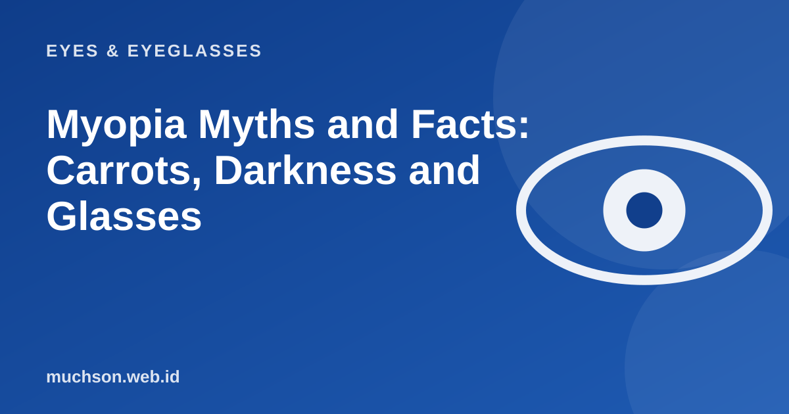

Home › Articles › Eyes & Eyeglasses
Eyes & EyeglassesMyopia Myths and Facts: Carrots, Darkness and Glasses
There is a lot of handed-down advice about myopia. Some of it is partly right, much of it wrong. Tap the cards below to test your guess before reading the explanation.

What really influences myopia
Text description of the diagram
Horizontal axis: Factors you can change. Vertical axis: Influence on myopia.
- Top left: Heredity: Cannot be changed, but can be watched for
- Top right: Time outdoors: Can be changed, with evidence behind it
- Bottom left: Growth years: Cannot be changed, the minus can rise
- Bottom right: Near-work habits: Can be managed with breaks and distance
Note
This information is general and educational. For decisions about treatment, including LASIK and therapy for children, consult an eye specialist.
FAQ
What foods are good for the eyes?
A balanced diet with coloured vegetables, fruit, fish and eggs supports eye health in general. No single food cures myopia.
Can myopia improve by itself?
Generally not. Myopia tends to stay stable or increase. A drop in minus in older age usually relates to changes in the lens or another eye condition, and needs to be checked.
Should children be forbidden to read?
No. Just give breaks, good light, a reasonable distance and time outdoors every day.